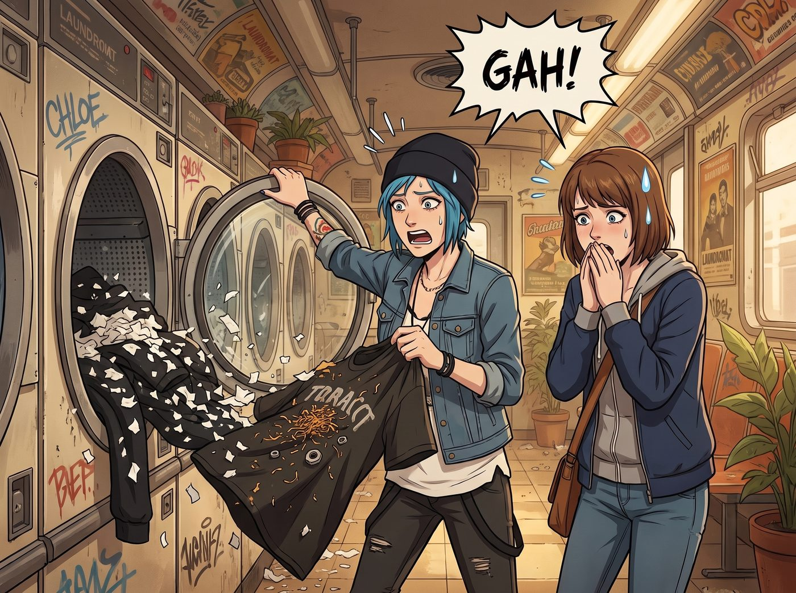

大頭蝦洗衣事故

在二號車廂這個充滿了核反應爐、聯邦法規與頂級黑客技術的高壓生態圈裡，Chloe 和 Max 在生活自理能力上，絕對是兩隻純度高達百分之百的大頭蝦。
當這兩個傢伙負責把衣服丟進那台軍用級改裝的洗脫烘一體機時，通常連口袋都懶得掏。於是，一場無可避免的紡織品生態災難就這樣爆發了。
一、洗衣機裡的微型核爆
當烘乾機發出清脆的完成提示音，Chloe 哼著龐克搖滾，一把拉開艙門的瞬間，她和 Max 都倒抽了一口冷氣。
這不是一堆乾淨的衣服，這是一場物理學與化學交織的悲劇。
Max 的貢獻：塞在連帽外套口袋裡的一整包忘記扔掉的紙巾，以及幾張二手相機店的收據。經過高溫水洗和烘乾，它們化作了億萬片白色的紙屑，宛如初雪，均勻且死心塌地附著在每一件黑色的衣物上。
Chloe 的貢獻：破洞牛仔褲裡不僅有半包被揉爛的劣質香菸，甚至還混著幾顆沾著機油的六角螺帽。金黃色的煙絲在高溫下完美爆開，像某種可怕的寄生真菌，死死嵌在 Max 的純棉T恤纖維裡；而那幾顆螺帽則在滾筒裡經歷了兩個小時的瘋狂彈射，差點把洗衣機的內壁砸出坑來。
「Maxine……」Chloe 拎起一件佈滿白雪與煙絲真菌的T恤，生無可戀地轉過頭，「妳如果現在還有超能力，能不能為了我們的衣服流一次鼻血，把時間倒轉回兩個小時前？」
「想都別想。我絕對不會為了妳口袋裡的煙頭去擾亂時空連續性。」Max 痛苦地捂住臉。
二、資本與行政的雙重絞殺
這場災難的氣味和視覺衝擊，立刻引來了車廂裡最可怕的兩個人。
Victoria 端著咖啡路過，只看了一眼，就發出了尖銳的冷笑：「Price，我早就說過妳們的生活方式是一種生物危害。妳們這是打算在衣服上種菸草，還是準備把自己偽裝成一個行走的煙灰缸？請妳們帶著這堆生化武器立刻離開公共區域，我的呼吸道對窮人的愚蠢過敏。」
而實習生 Lily 則抱著平板電腦，幽靈般地出現在洗衣機旁。她推了推反光的圓框眼鏡，大眼睛裡沒有憤怒，只有冰冷的算計。
「兩位學姐，這不是單純的洗衣事故，這是對固定資產的惡意物理破壞。」Lily 的手指在平板上飛速敲擊：「根據車廂設備維護協議，高溫碳化的菸葉和紙漿纖維已經嚴重堵塞了這台商業洗衣機的冷凝過濾器；而那些六角螺帽造成的金屬疲勞與內壁刮傷，導致機器的折舊率瞬間飆升了百分之四百。」
Lily 抬起頭，露出乖巧的微笑：「我已經為妳們生成了一份維修與零件更換的罰單。總計一千八百五十美金。這筆費用將從 Chloe 學姐下個月的特殊車輛改裝預算以及 Max 學姐的寶麗來相紙採購基金中按比例強制扣除。」
「Lily！妳不能這樣！那是我的相紙錢！」Max 哀嚎。
「老娘的避震器預算！！」Chloe 抓狂。
三、大天使的除塵救贖
就在兩人面臨破產和沒有衣服穿的雙重絕望時，Kate 繫著小圍裙，手裡拿著兩把黏塵滾筒走了過來。
「哎呀，這就像是衣服們在洗衣機裡舉辦了一場熱鬧的碎紙花派對呢。」小天使看著那堆慘不忍睹的衣服，依然能給出最神聖的解讀。
Kate 溫柔地將衣服攤平，把一個滾筒遞給快要哭出來的 Max：「沒關係的，只要大家一起幫忙，很快就能把它們弄乾淨。煙草的味道，就當作是大自然給衣服的一種特別薰香吧。」
在 Kate 的聖光感召下，這兩個在街頭和財團面前叱吒風雲的傢伙，只能乖乖地盤腿坐在地毯上，像兩個犯錯的小學生一樣，一點一點地撕著黏塵紙，清理著自己闖下的禍。